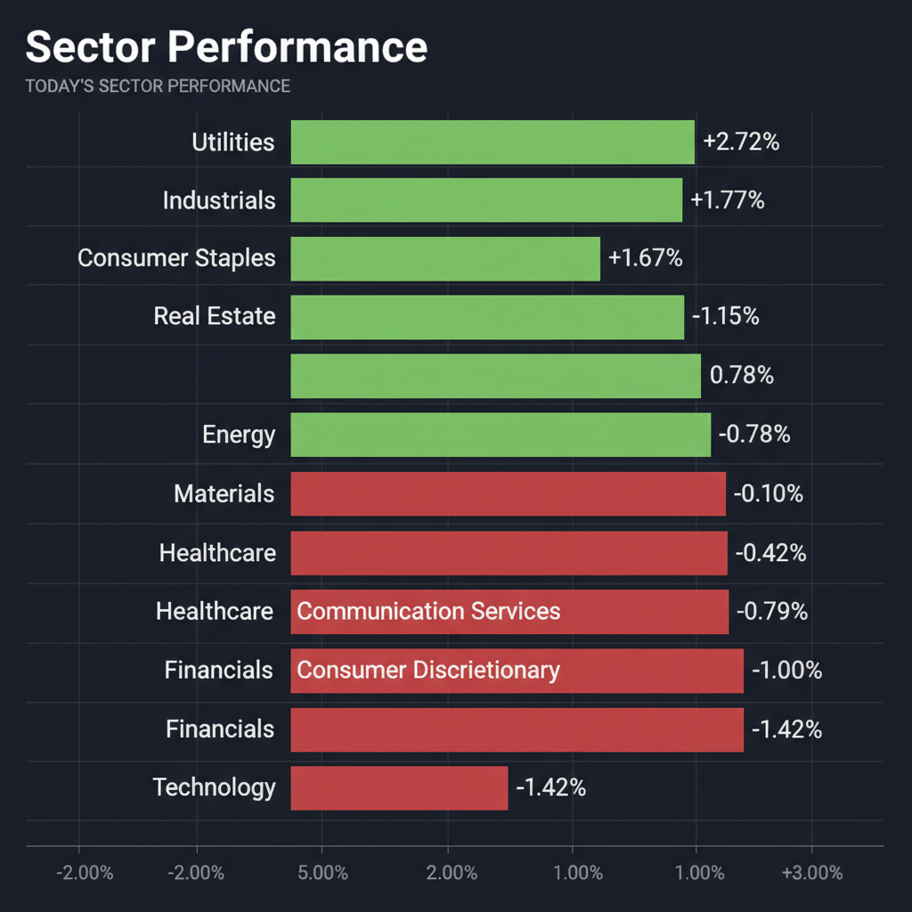
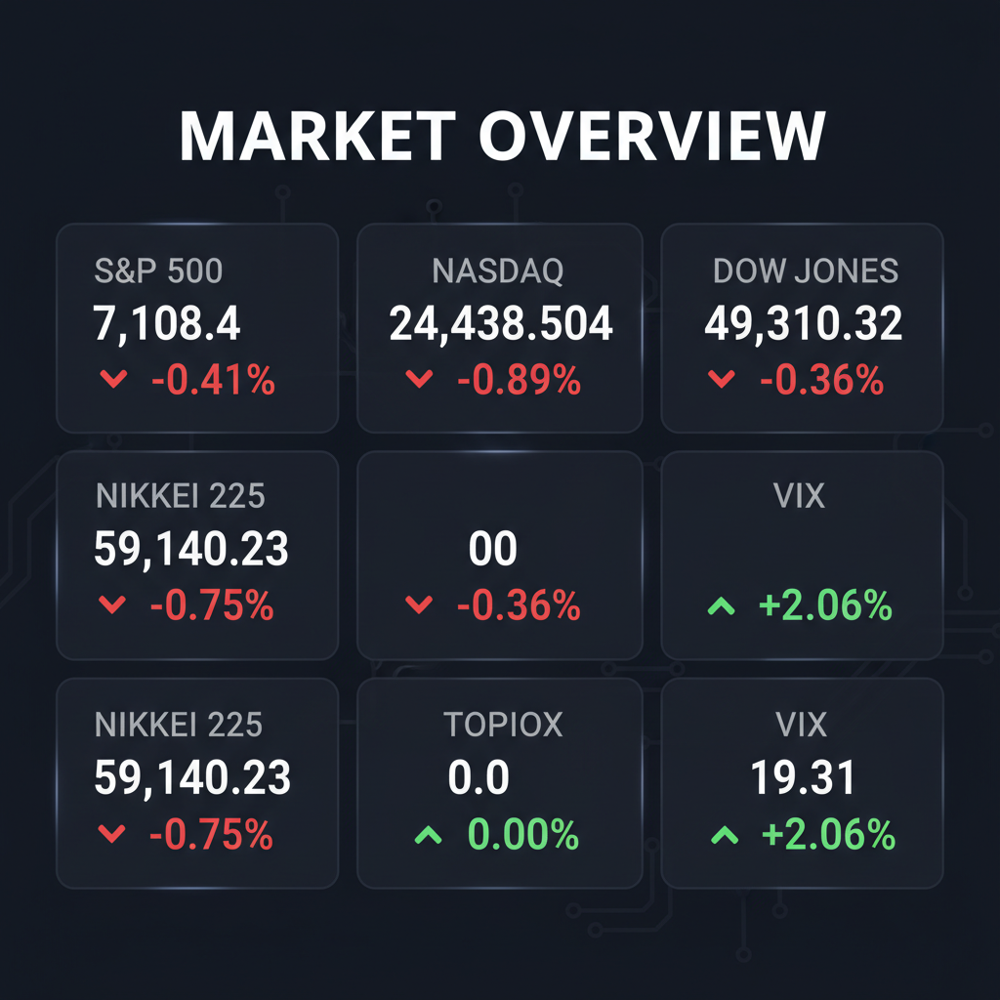

Daily Investment Report - 2026-04-24
Generated: 2026/4/24 7:23:35


1. エグゼクティブサマリー
- 米国市場はイラン情勢によるインフレ再燃警戒とIBM等の決算失望から下落し、VIXが20に迫るなどリスクオフ姿勢が鮮明になっています。
- 日本市場は日経平均が一時6万円を突破したもののTOPIXとの乖離が激しく、AI・半導体といった一部の値がさ株への極端な偏重（バブル状態）が指摘されています。
- 投資戦略としては、過熱したハイテク株から利益を確定し、ディフェンシブセクターや水インフラ・レアアース関連の「割安な中小型バリュー株」へ資金をシフトしつつ、現金比率を高める防御的アプローチを推奨します。
2. 注目銘柄リスト
強気（買い推奨）
- 第一稀元素化学工業（4082） [約400億円]: レアアースのサプライチェーン再構築（脱中国化）という国策テーマに完全に合致しており、好決算を発表したニッチトップの隠れたバリュー銘柄です。
- 月島ホールディングス（6332） [約800億円]: 上下水道プラントに強みを持ち、インフラ再編の追い風を受けつつもPBR1倍割れに放置されており、安定したキャッシュフローが魅力的な銘柄です。
- 東京エネシス（1945） [小型]: 電力インフラ工事の中堅企業で、好決算と安定した配当利回りを誇り、インフレ環境下でも価格転嫁が進みやすいディフェンシブな特性を持っています。
中立（様子見）
- インフロニアHD（5076） [中大型]: 「水ing」買収など戦略的なインフラ再編の動きは評価できますが、すでに市場の注目を集めており、安全マージンとテクニカルな押し目を確認するまでは様子見が妥当です。
- 荏原製作所（6361） [中大型]: ガバナンス改革の方向性はファンダメンタルズ改善に寄与しますが、全体相場のモメンタム悪化を考慮し、明確な底打ちシグナルを待つべきです。
弱気（警戒）
- 大麻（マリファナ）関連の中小型バイオ株全般 [小型・変動大]: 「スケジュールIII」への規制緩和はカタリストですが、高金利環境下での資金調達コスト増大リスクが高く、恒常的な赤字による財務の脆弱性が致命傷になりかねません。
- フリーポート・マクモラン（FCX） [大型]: グラスバーグ鉱山の再稼働遅延が将来の生産に影響すると警告しており、資源価格が高騰していてもキャッシュフローを毀損する特有のオペレーションリスクが警戒されます。
3. セクター推奨ランキング
中東の地政学リスクによる原油高プレミアムと米国内の原油増産期待の両面から恩恵を受け、現在のインフレ再燃リスクに対する最も強力なヘッジとして機能します。
- 2位：公益事業（XLU） / 生活必需品（XLP）
VIX指数が上昇し相場のボラティリティが急拡大する中、実体経済のノイズに強く、確実な資金の逃避先となるディフェンシブセクターです。
米国のビジネス活動の底堅さに加え、西側諸国によるレアアースサプライチェーンの再構築や、水インフラ再編といった国策レベルの巨大な資本サイクルの恩恵を直接受けます。
- 最下位：テクノロジー（XLK） / 一般消費財（XLY）
AIトレードの過熱によりバリュエーションが極限まで高まっており、インフレによる高金利の長期化や、わずかな決算未達（ガイダンス・ミス）でセクター全体が急落するリスクを孕んでいます。
4. 今週の注目イベント
- 4月24日：日本の主要企業37社（ルネサスエレクトロニクス、ファナック、中外製薬など）の決算発表
- 4月24日：OIO Groupの1対3の株式併合（取引前実施）
- 今週随時：イスラエル・レバノンの停戦延長状況および、ホルムズ海峡等におけるイラン関連の地政学的ヘッドライン
- 今週随時：大麻の「スケジュールIII」移行に関する米司法省・FDAの追加動向
5. リスク要因
- 日米デカップリングとバブル崩壊リスク： 日経平均の6万円突破はTOPIXや実体経済と著しく乖離しており、ルネサスやファナック等の決算が市場の期待に届かなかった場合、AI・半導体株を起点とした激しい売り浴びせ（マルチプル収縮）が発生する恐れがあります。
- インフレ再燃によるスタグフレーション： イラン情勢の長期化による物流コスト上昇や原油高がインフレを再燃させ、景気が減速する中でも利下げが行えない「スタグフレーション」へと陥るシナリオが最大の懸念です。
- VIX指数の20突破によるアルゴリズム売りの連鎖： VIX指数が心理的節目の20を明確に超えて定着した場合、トレンドフォロー型ファンドによる機械的な投げ売りが発動し、市場全体が急落トレンドに巻き込まれる危険性があります。
- テーマ株のキャッシュ枯渇リスク： 大麻規制緩和やレアアース深海採取といった成長テーマは、実用化や黒字化までのキャッシュバーン（資金燃焼）が激しく、開発遅延や高金利下での資金調達難により企業価値が毀損するブラックスワンが潜んでいます。
6. アクションアイテム
- 現金比率の劇的な引き上げ： 市場のボラティリティ急増と下落リスクに備え、現在のポジションサイズを通常の半分以下に縮小し、キャッシュを最大限確保してください。
- AI・半導体・ハイテク株の利益確定とストップロス設定： バリュエーションが過熱しているテクノロジー銘柄については利益確定を進めるか、直近サポートライン（または旧レジスタンスライン）の3〜5%下に厳格なストップロスを設定し、急落に備えてください。
- 割安なインフラ・資源系中小型株への資金シフト： 新規にエントリーを行う場合は、下値リスクが限定的で国策の追い風がある水インフラ関連（月島HDなど）やレアアース関連（第一稀元素化学工業など）のPBR1倍割れバリュー株に限定してください。
- テールリスクヘッジの実行： VIXの急上昇に備え、S&P500やNASDAQに対するアウト・オブ・ザ・マネー（OTM）のプットオプション購入、あるいはVIXコールの買いを通じて、下値リスクを物理的に限定するヘッジを直ちに構築してください。